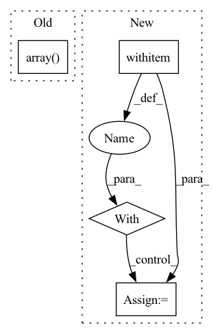

Pattern ID :15779

Before Change
if self.verbose:
print(f"Loading labels/field_ids for {tile_name}")
labels = np.array(
Image.open(
os.path.join(
self.root,
self.base_folder,
"ref_african_crops_kenya_02_labels",
tile_name + "_label",
"labels.tif",
)
)
)
field_ids = np.array(
Image.open(
os.path.join(
After Change
tile_name + "_label",
)
with Image.open(os.path.join(directory, "labels.tif")) as img:
array = np.array(img)
labels: Tensor = torch.from_numpy(array) // type: ignore[attr-defined]
with Image.open(os.path.join(directory, "field_ids.tif")) as img:
array = np.array(img)
In pattern: SUPERPATTERN
Frequency: 3
Non-data size: 4
Instances
Fragment ID: 53327885
Project Name: microsoft/torchgeo
Commit Name: e48f7ed0e975d0543bc80d637185b13f62f1eb6c
Time: 2021-06-16
Author: ajstewart426@gmail.com
File Name: torchgeo/datasets/cv4a_kenya_crop_type.py
M Class Name: CV4AKenyaCropType
N Class Name: CV4AKenyaCropType
M Method Name: _load_label_tile(2)
N Method Name: _load_label_tile(2)
M Parent Class: VisionDataset
N Parent Class: GeoDataset
M File Name: torchgeo/datasets/cv4a_kenya_crop_type.py
N File Name: torchgeo/datasets/cv4a_kenya_crop_type.py
M Start Line: 221
M End Line: 243
N Start Line: 225
N End Line: 240
'>
Before Change
f"{tile_name}_{date}",
f"{band_name}.tif",
)
band_img = np.array(Image.open(img_fn))
img[band_index] = band_img
return img
After Change
f"{tile_name}_{date}",
f"{band_name}.tif",
)
with Image.open(filepath) as band_img:
array = np.array(band_img)
img[band_index] = torch.from_numpy(array) // type: ignore[attr-defined]
return img
'>
Fragment ID: 53327889
Project Name: microsoft/torchgeo
Commit Name: e48f7ed0e975d0543bc80d637185b13f62f1eb6c
Time: 2021-06-16
Author: ajstewart426@gmail.com
File Name: torchgeo/datasets/cv4a_kenya_crop_type.py
M Class Name: CV4AKenyaCropType
N Class Name: CV4AKenyaCropType
M Method Name: _load_single_image_tile(4)
N Method Name: _load_single_image_tile(4)
M Parent Class: VisionDataset
N Parent Class: GeoDataset
M File Name: torchgeo/datasets/cv4a_kenya_crop_type.py
N File Name: torchgeo/datasets/cv4a_kenya_crop_type.py
M Start Line: 321
M End Line: 332
N Start Line: 319
N End Line: 333
'>
Before Change
for index, vocab in list(zip(range(0, len(self.vocab)), self.vocab)):
self.vocab_dict[vocab] = index
self.index_dd = np.array(list(map(lambda y: np.array(list(map(lambda x:
self.vocab_dict[x], y.split()))), data)))
self.idx2token = {v: k for (k, v) in self.vocab_dict.items()}
self.bow = get_bag_of_words(self.index_dd, len(self.vocab))
After Change
indices = []
data = []
vocabulary = {}
with open(self.file_name, "r") as filino:
docs = filino.readlines()
for d in docs:
for term in d.split():
'>
Fragment ID: 53327888
Project Name: milanlproc/contextualized-topic-models
Commit Name: 06e8fbee8e3be72841f4aac15b1f43bd6821ffee
Time: 2020-07-30
Author: s.terragni4@campus.unimib.it
File Name: contextualized_topic_models/utils/data_preparation.py
M Class Name: TextHandler
N Class Name: TextHandler
M Method Name: prepare(1)
N Method Name: prepare(1)
M Parent Class:
N Parent Class:
M File Name: contextualized_topic_models/utils/data_preparation.py
N File Name: contextualized_topic_models/utils/data_preparation.py
M Start Line: 48
M End Line: 64
N Start Line: 51
N End Line: 68